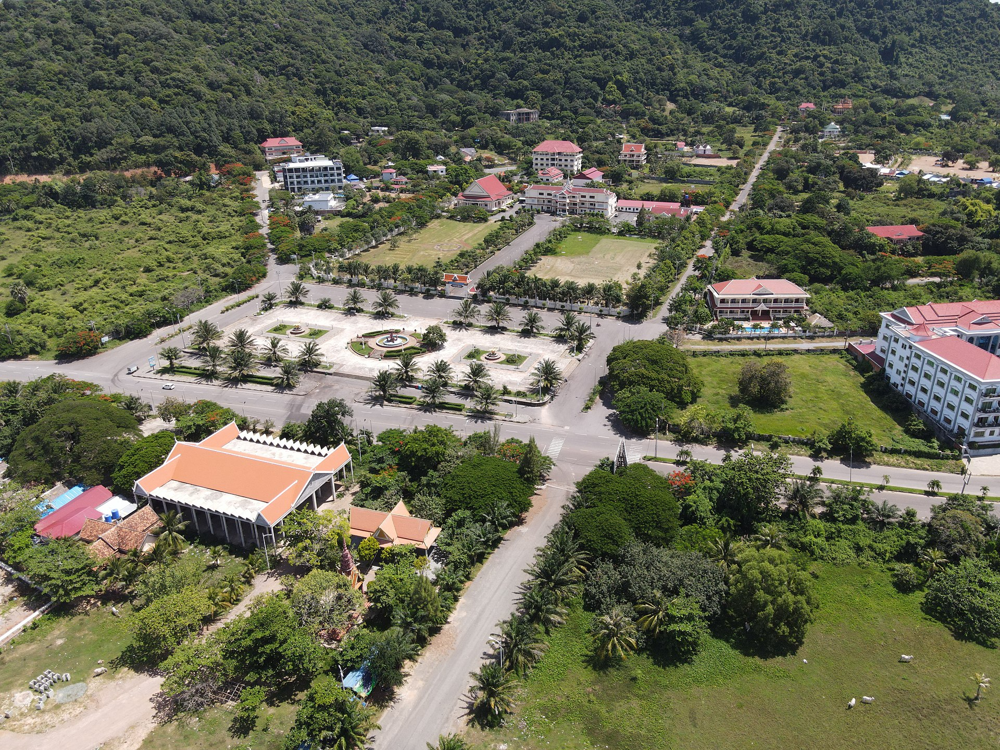

Kep (Khmer: ខេត្តកែប) is the smallest province (khaet) of Cambodia covering 336 km2 (130 sq mi), with a population of 41,798. It is one of the newest Cambodian provinces, together with Pailin, Sihanoukville and Tboung Khmum, created by Royal Decree on 22 December 2008, which separated Kep Municipality & Damnak Chang'aeur District from the Kampot province, as well as adjusting several provincial borders. It is both the smallest and least populous province of Cambodia. The provincial capital is Kep and the province contains the Kep National Park.
